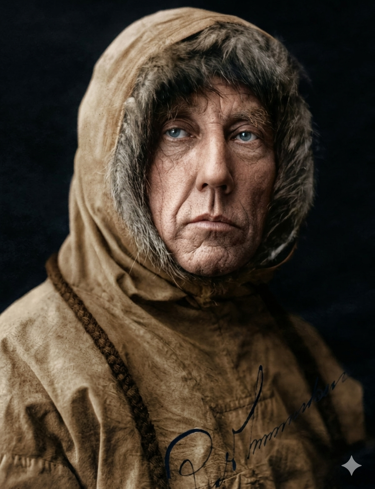

רואלד אמונדסן
| משלחת הקוטב הדרומי: 1910 – 1912
הראשון להגיע לשני הקטבים ולחצות את המעבר הצפון-מערבי

לחץ על התמונה להגדלה
Roald Amundsen in polar gear | Source: Wikimedia Commons | License: Public Domain
ניתוח אטימולוגי של השם המלא
שם פרטי: רואלד (Roald)
השם "רואלד" הוא שם סקנדינבי (נורדי) עתיק ומלא הוד.
מקור בלשני: השם מורכב משתי מילים בנורדית עתיקה: Hróðr (תהילה, כבוד, או "מפורסם") ו-Valdr (שליט, מנהיג). הפירוש המילולי הוא "שליט מפורסם" או "מנהיג עטור תהילה".
סמליות פואטית: השם הזה התאים באופן נבואי לאיש שהפך למנהיג משלחות החקר המפורסם והמצליח ביותר בהיסטוריה של סקנדינביה המודרנית. בניגוד לסקוט הבריטי שניסה למשול באנשיו דרך היררכיה צבאית נוקשה, אמונדסן "שלט" באנשיו דרך כבוד מקצועי, היגיון קר, והכנה מדוקדקת (כמו ויקינג אמיתי). תהילתו באה לידי ביטוי בכך שהיה הראשון להגיע לשני הקטבים (צפון ודרום) והראשון לחצות את המעבר הצפון-מערבי.
שם משפחה: אמונדסן (Amundsen)
זהו שם משפחה נורווגי פטרונימי (שם המבוסס על שם האב).
מקור בלשני: השם מורכב מהשם Amund בתוספת הסיומת -sen (שפירושה "הבן של"). השם Amund עצמו מגיע מהנורדית העתיקה Agmundr, שמשמעותה "מגן עם חרב" או "שומר באמצעות חרב" (Agi = חוד החרב/טרור, Mund = מגן).
הקשר למורשת: אמונדסן נולד למשפחה של בעלי ספינות ורבי-חובלים נורווגים קשוחים. המורשת של "מגן החרב" משתקפת היטב באופיו: הוא היה פרגמטי, קר-רוח, ותמיד שם את הישרדות והגנת אנשיו במקום הראשון (הוא סירב לקחת סיכונים מיותרים שלא גובו בתכנון מושלם, בניגוד לרומנטיקה הבריטית שהובילה לאסון של סקוט).
ילדות ורקע מוקדם: חלומות בקור הנורווגי
רואלד אמונדסן נולד בבורגה (Borge), נורווגיה, כבן הרביעי במשפחה אמידה של יורדי ים, קפטנים ובעלי ציי ספינות ציד לווייתנים.
אידאולוגיה ומניעים: מקצוענות קרה מול רומנטיקה והתרמית הגדולה
המניע של אמונדסן היה שונה מבעבר: ספורטיבי-מדעי-לאומי. המטרה העליונה הייתה להיות הראשון.
מקצוענות קיצונית והסתמכות ילידית
בעוד שהגישה הבריטית של רוברט סקוט ראתה בחקר הקטבים מבחן של אומץ אנושי ורומנטי (גם במחיר סבל), גישתו של אמונדסן הייתה הפוכה. הוא טען ש"הצלחה תלויה בהכנה" וש"הרפתקה היא סימן לתכנון לקוי". הוא רצה לבצע את המשימה ביעילות ולחזור בחיים.
ההבדל הגדול ביותר בינו ליריביו היה ההסתמכות על ידע האינואיטים. הוא גר עימם חודשים, ולמד לוותר על בגדי צמר אירופאים לטובת פרוות אטומות למים, ולהשתמש באופן בלעדי בכלבי מזחלות.
שינוי היעד והתרמית הפיננסית הגדולה
אחד הסיפורים המרתקים ביותר במסעו הוא אופן השגת המימון. המטרה המקורית שלו הייתה להיות הראשון בקוטב הצפוני. הוא השיג מימון נרחב מהפרלמנט הנורווגי (שחיפש יוקרה עולמית לאחר עצמאותו) ומפריטיוף ננסן שהשאיל לו את הספינה "פראם".
ב-1909, הגיעו ידיעות ששני אמריקאים (פירי וקוק) טוענים שכבר כבשו את הקוטב הצפוני. כיוון שרצה להיות ראשון, החליט בסתר לשנות יעד אל הקוטב הדרומי. הוא שמר זאת בסוד מוחלט כדי שהפרלמנט וננסן לא יבטלו את המימון ויחרימו את ספינתו כדי לא להסתכסך עם הבריטים ששמו עינם על הדרום.
הוא שיקר לכולם: לתורמים, לממשלה ואף לאחיו. רק באיי מדירה, הרחק מהישג ידם של התורמים, כינס את הצוות וחשף את המטרה האמיתית. למרות הזעם בנורווגיה, כולם סלחו לו כשחזר כמנצח ב-1912.
המרוץ אל הקוטב הדרומי (1910-1912)
המסע לקוטב הדרומי היה תצוגת תכלית של פרגמטיות מול האיתנים הקשים ביותר על כדור הארץ.
הקמת בסיס האם והמצבורים
אמונדסן הקים את מחנה "פראמהיים" על מדף הקרח רוס, קרוב ב-100 ק"מ לקוטב לעומת המחנה הבריטי. הוא ביסס את התזונה על בשר כלבי ים טרי נגד צפדינה. לפני החורף, הצוות הטמין טונות של אספקה לאורך הנתיב, וסימן כל מצבור בעשרות דגלים שחורים כדי לא לפספס אותם בסופות שלגים.המסע והניצחון (14 בדצמבר 1911)
באוקטובר 1911 יצא עם 4 אנשים, 4 מזחלות ו-52 כלבים. למרות טיפוס מסוכן בגובה 3,000 מטרים על קרחון אקסל הייברג, הם טסו על הקרח במהירות של מעל 30 ק"מ ביום. ב-14 בדצמבר הגיעו לנקודה 90° דרום, הניפו את דגל נורווגיה והשאירו מכתב לסקוט.החזרה המושלמת והטרגדיה הבריטית
אמונדסן ואנשיו חזרו למחנה הבסיס ב-25 בינואר 1912 בריאים ושלמים. לעומתם, סקוט וצוותו הגיעו לקוטב חודש לאחריהם, גילו את הדגל הנורווגי, וקפאו למוות בדרך חזרה (הם סירבו להשתמש בכלבים וגררו את המזחלות בעצמם עד אפיסת כוחות).
אקולוגיה של הישרדות: הכלבים מול האדם
ההחלטה האקולוגית והלוגיסטית החשובה ביותר הייתה ההסתמכות המוחלטת על **כלבים נורדיים-ארקטיים (Huskies)**. הוא ידע שהם התפתחו אבולוציונית לקור קיצוני (בניגוד לסוסי הפוני הסיביריים שהביא סקוט, שהזיעו וקפאו).
הקניבליזם המתוכנן: הצד הקר של אמונדסן התבטא בכך שיצא עם 52 כלבים אך תכנן שרק 11 יחזרו. הוא נהג "לצמצם" את הלהקה כשהמזחלות התרוקנו, והשתמש בבשר הכלבים הטרי כמזון לכלבים האחרים ולאנשים. החלטה אכזרית זו פתרה את בעיית סחיבת המזון ואת מחלת הצפדינה. הוא גם אגר טונות של בשר כלבי ים ופינגווינים בקיץ, מבין שבעלי החיים הם המפתח לחיים באנטארקטיקה.
מסעות נוספים והסוף המסתורי
- המעבר הצפון-מערבי (1903-1906): לפני הקוטב הדרומי, הוא היה לראשון בהיסטוריה שהצליח לנווט ספינה (ה"יואה") דרך "המעבר הצפון-מערבי" שמצפון לקנדה המחבר בין האוקיינוס האטלנטי לשקט (משימה שגבתה חייהם של מאות מלחים בריטים לפניו).
- טיסות מעל הקוטב הצפוני: בשנות ה-20 החליף לספינות אוויר. ב-1926 חצה את הקוטב הצפוני בספינת האוויר "נורגה", ובכך הפך לאדם הראשון בוודאות שהגיע לשני הקטבים (לאחר שהתגלה שהאמריקאי פירי ככל הנראה זייף או שגה בחישוביו בקוטב הצפוני).
- הסוף הטרגי והאירוני (1928): ביוני 1928, יצא במטוס ימי כדי להציל חוקר איטלקי יריב שספינתו התרסקה בקוטב הצפוני. מטוסו של אמונדסן התרסק לתוך ים הקרח ונעלם. גופתו לא נמצאה מעולם. המנהיג הקפדן ביותר איבד את חייו במשימת הצלה הרואית.
מקורות וביבליוגרפיה (אימות מחקר אקדמי)
- "The South Pole" (Roald Amundsen, 1912): ספרו המספק את תיאור הגוף הראשון של האסטרטגיה, השימוש בכלבים והניצחון.
- "The Last Place on Earth" (Roland Huntford, 1979): הספר שניתח באכזריות את כישלונות סקוט לעומת הגאונות, התרמית הפיננסית להשגת המימון וההסתמכות על ידע ילידי של אמונדסן.
- ארכיון מכון הקוטב הנורווגי (Norsk Polarinstitutt): המסמכים הרשמיים המאמתים את יומני הניווט מ-14 בדצמבר 1911.